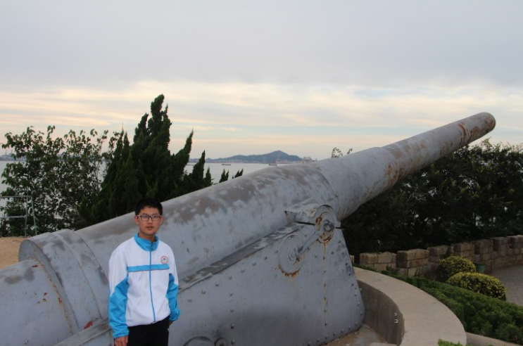
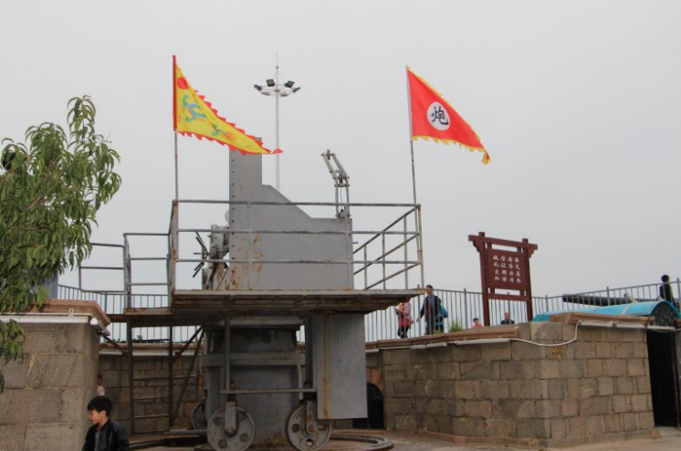
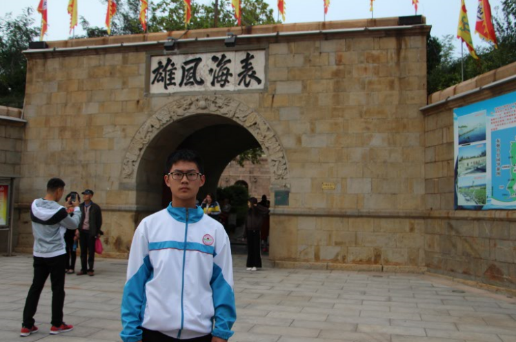
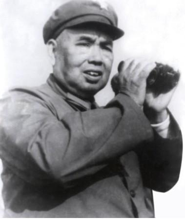
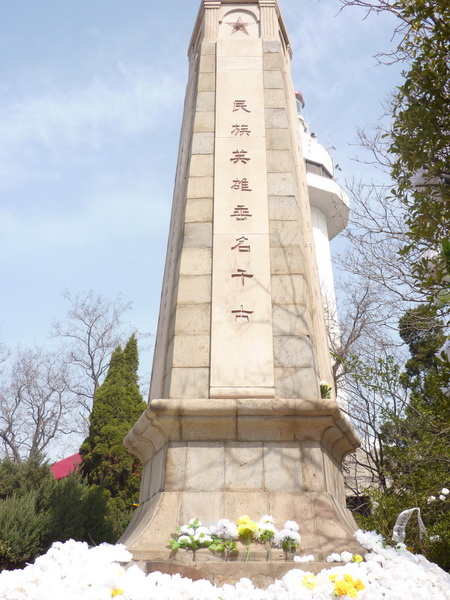

东炮台海滨风景区位于烟台最美丽的滨海路段，具有得天独厚的地理位置和景观资源。风景区拥有辽阔的海域，风光旖旎，海水清澈，是集海滨自然风光、古迹遗址、历史文化人文自然景观于一体的新兴大型海滨旅游景区。
  古炮台是北方罕见的保存较为完整的海防设施，具有很高的历史文化价值。1891年，北洋大臣李鸿章经过考证，发现这里是难得的海防重地，于是奏请光绪帝在此兴建炮台，并请德国技师督造安装了当时技术最先进的克虏伯大炮。
 山光、海色、人文、遗址完美地结合在一起，增添了东炮台的无限魅力；阳光、沙滩、碧海蓝天、美景神韵展现出东炮台诗情画意的风景线。
 传奇将军许世友在山东16年，在胶东指挥作战9年，在海阳留下了许多光辉的战斗足迹。1942年7月1日，八路军胶东军区在海阳县朱吴村成立，后军区机关迁至郭城镇战场泊村。期间，许世友将军率领胶东军民进行了艰苦卓绝的抗日战争，取得了辉煌战绩。毛泽东主席曾称赞：在许世友领导下的胶东子弟兵“打红了胶东半边天”。
1945年8月15日，日本政府宣告无条件投降，24日拂晓，烟台胜利解放。在解放烟台战斗中，共歼灭日伪军1500多人，八路军将士89人壮烈牺牲。为了纪念在解放烟台的战斗中献身的抗日英雄，烟台市人民政府根据胶东行署的指示，于1946年5月，在烟台山忠烈祠西侧修建“抗日烈士纪念碑’。碑身高8米，呈五菱柱形，由乳白色的花岗岩石块砌筑。碑的正南面为“民族英雄名垂千古”八个红色大字，背面铭刻着89位烈士的英名。
 烟台“抗日烈士纪念碑”八路军将士名单为：主任：张黎；营长：田夫；连长：刘仲振、任书竹；副连长：高淑瑞；指导员：马镜；军医：胡道先；排长：杨志强；副排长：张玉峰；排政干：夏毓文；班长：徐志国、金相修、孙学俭；副班长：孙德本、杨洪 祥、陈嘉庆；战士：姜铎芳、袁新芷、于新海等英模89人。